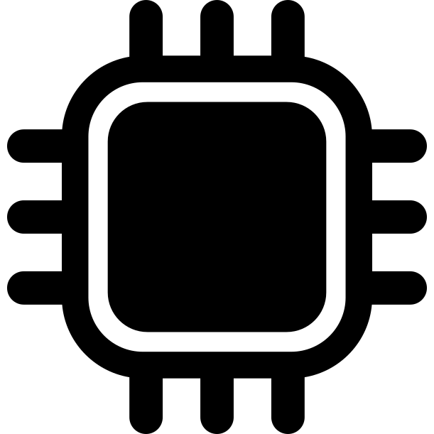
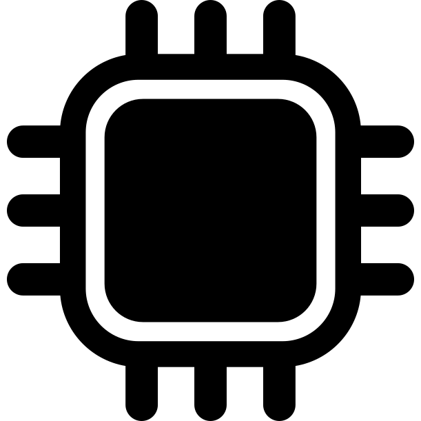

Light fascinates me and Wifi is part of my life. Why
not combine the two? This interesting concept was
developed by Professor Harald Haas, who has a TED
Talk about Li-Fi and why it's pretty awesome. I was just
tinkering around with some circuit parts and some
C++ examples when I realized I could make my own
proof-of-concept system. I ended up actually completing
a really simple version for a science project back in
my junior year of high school, but I've done some iterations
since.
If you want to see my code, it's on my github, linked down
below. Right now, it can transmit strings, given that you
have the proper parts!


 
